Для тех, кому мало просто «вкусно»
Сырные конфеты, пасты и подарочные наборы для знакомства, для себя и для подарка. Небольшие партии в Королёве, доставка по России.
Ассорти из 4 ТрюфЧизов за 500 ₽
Выберите не товар, а впечатление
Не нужно угадывать по фотографии — начните с того, какого впечатления хочется.
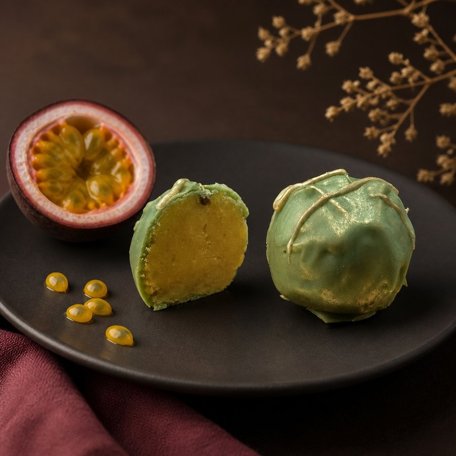
ТрюфЧизы — конфеты из сыра и шоколада
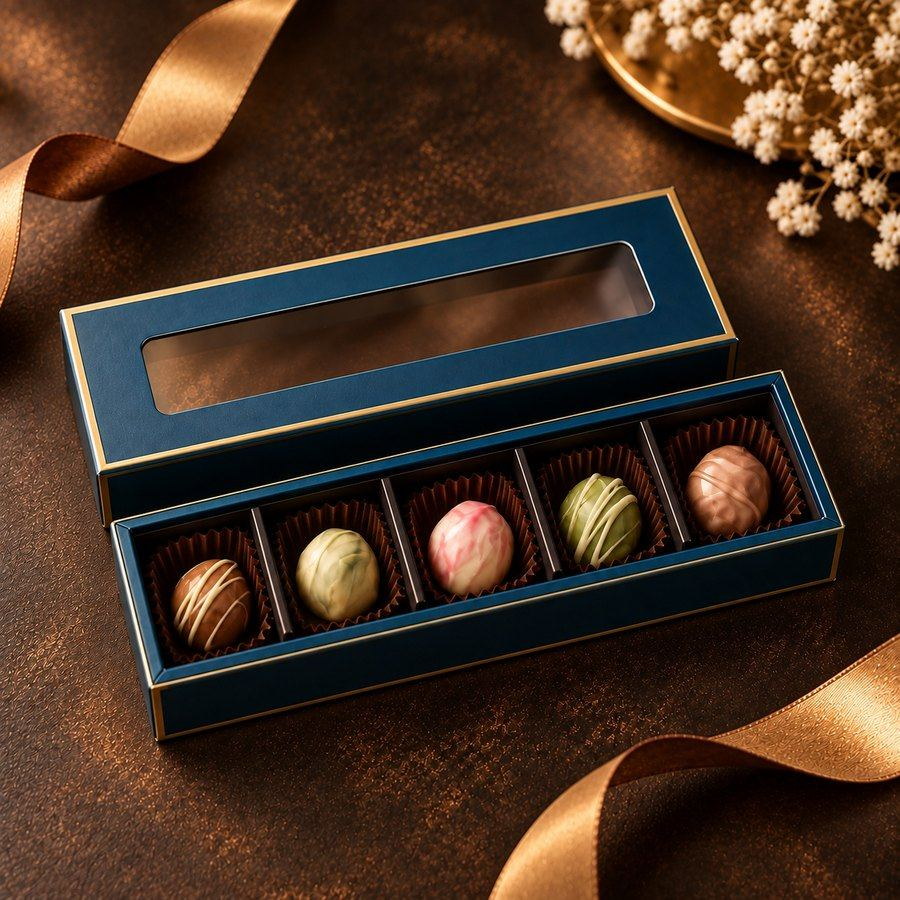
выберу вкусы вместе с Анной
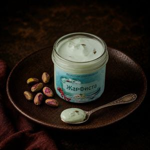
посмотрю сырные пасты
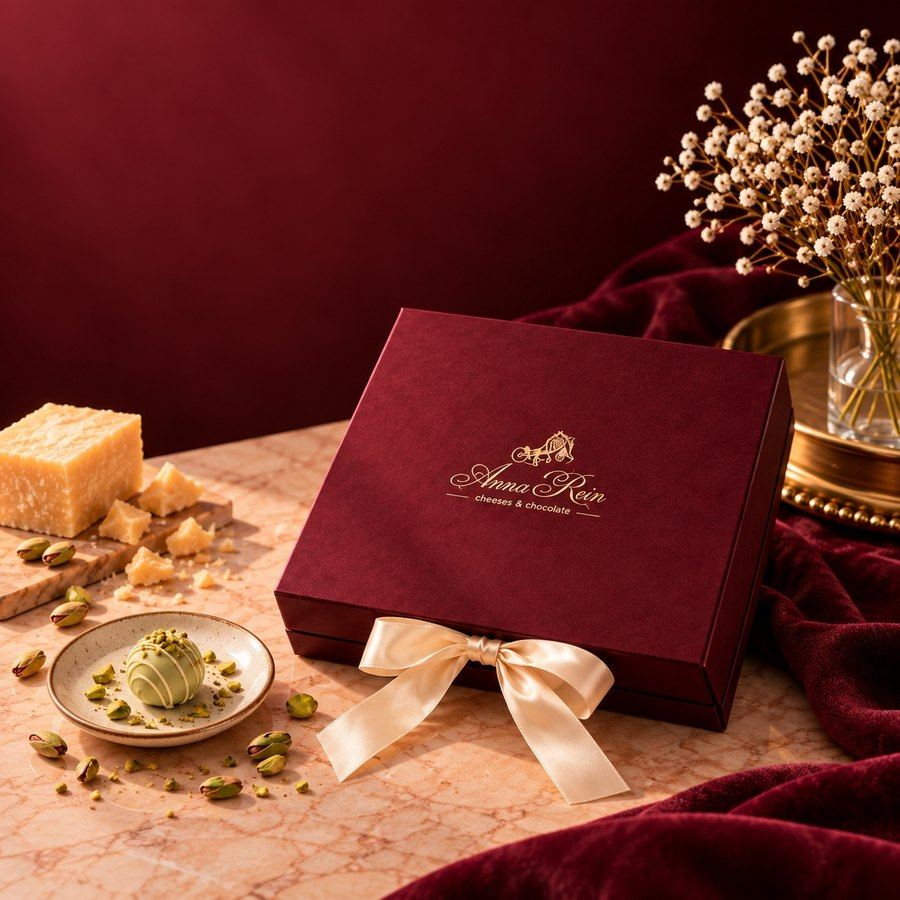
подберу набор по поводу и бюджету
Не знаете, что выбрать? Напишите, что любите, для себя или в подарок и на какую сумму.
Написать АннеТри способа попробовать
ТрюфЧизы — конфеты из сыра и шоколада. Выберите формат для знакомства, наслаждения или подарка.
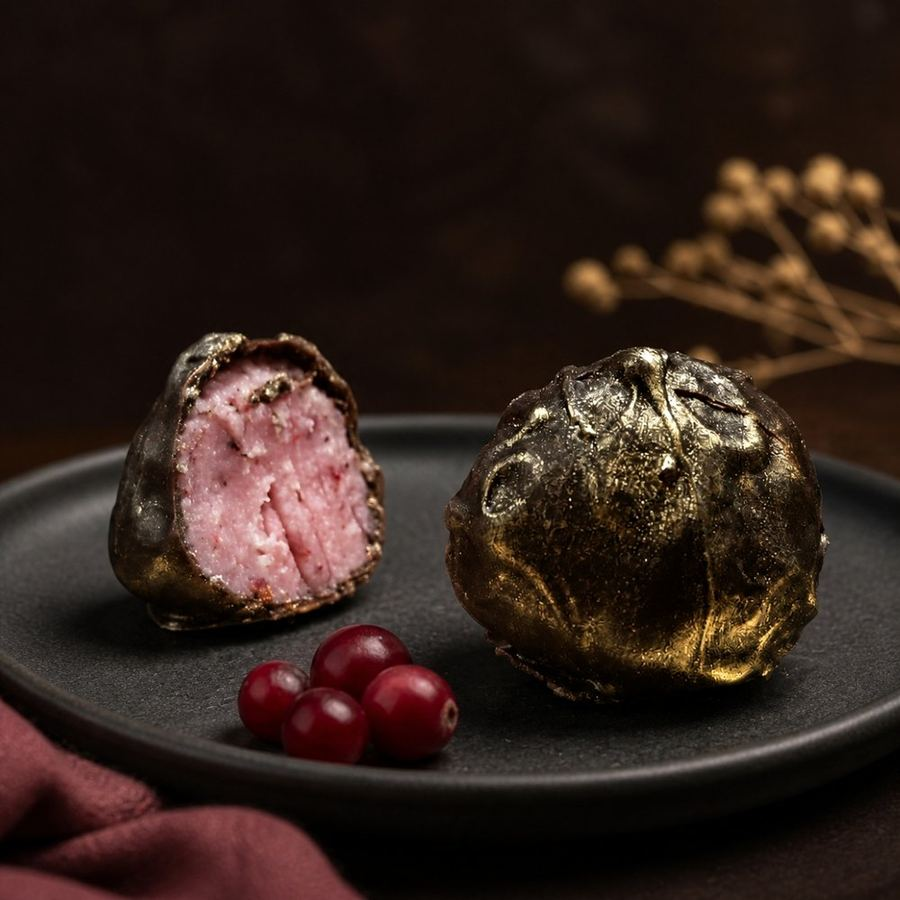
конфеты из сыра и шоколада с разными вкусами; ассорти из 4 штук — 500 ₽
от 500 ₽
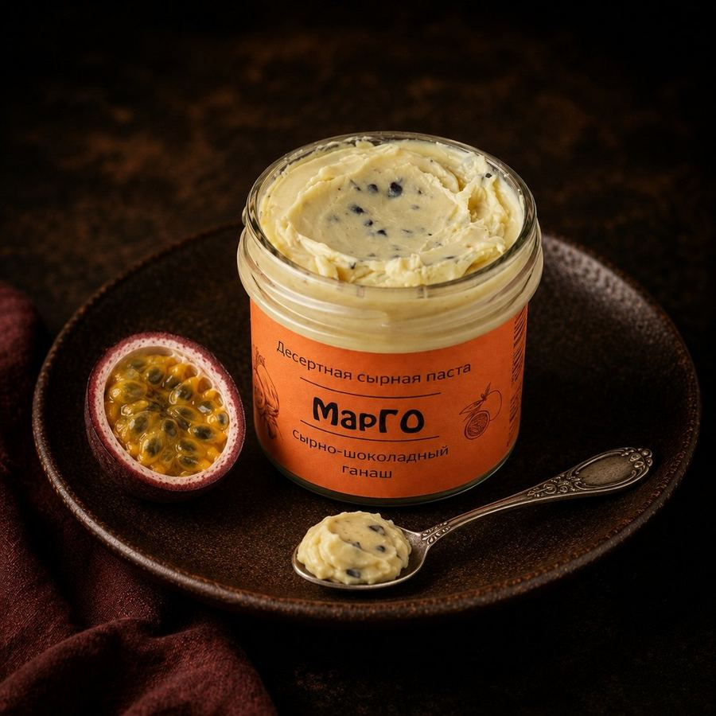
кремовые десерты для тарталеток, тостов, кофе и необычных сочетаний; 125 г — 500 ₽, 235 г — 900 ₽
от 500 ₽
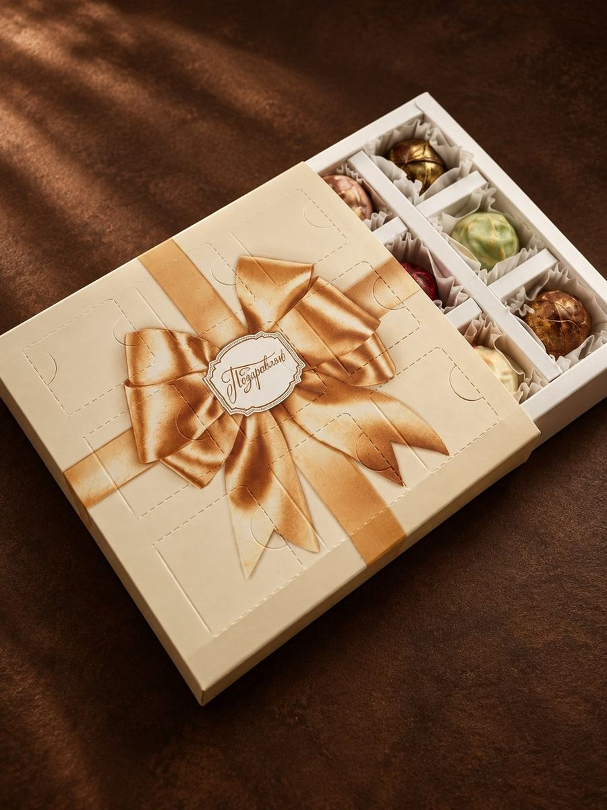
готовые коробки, пеналы, флаконы и сертификаты; от 800 ₽
от 800 ₽
Не угадывайте по названию
Расскажите, какой шоколад, сыр, ягоды и орехи вы любите, — Анна поможет собрать сочетание.
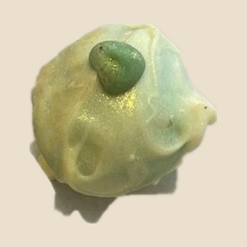
Фисташковый или Сливочная малина
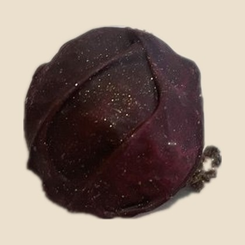
Клюква или Маракуйя
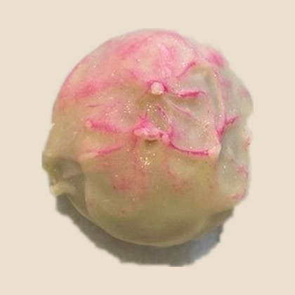
Тёмный или Классика
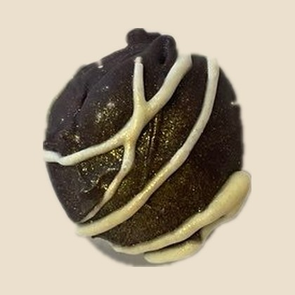
Копчёная груша или Тёмная смородина
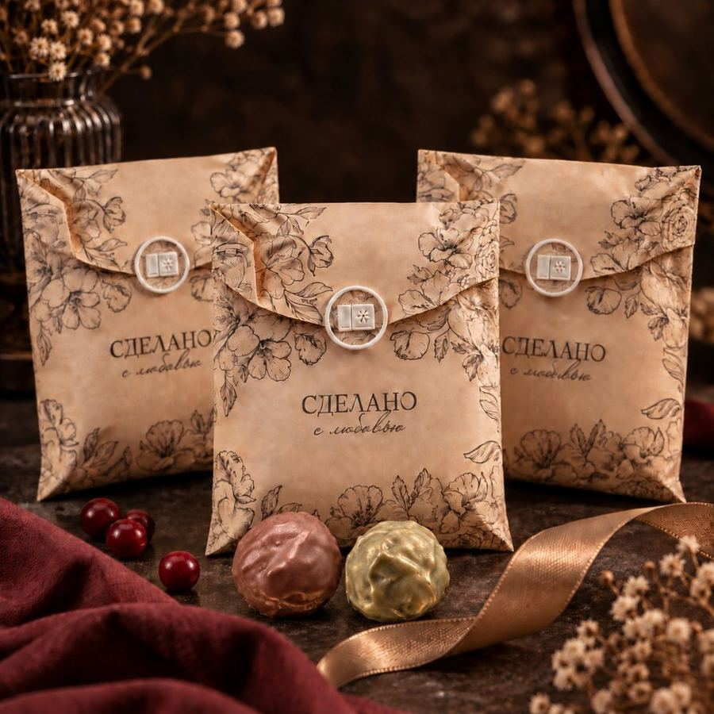
500 ₽
Когда хочется задержаться во вкусе
Ешьте ложкой или подавайте в тарталетке, на тёплом багете, к кофе и необычным блюдам.
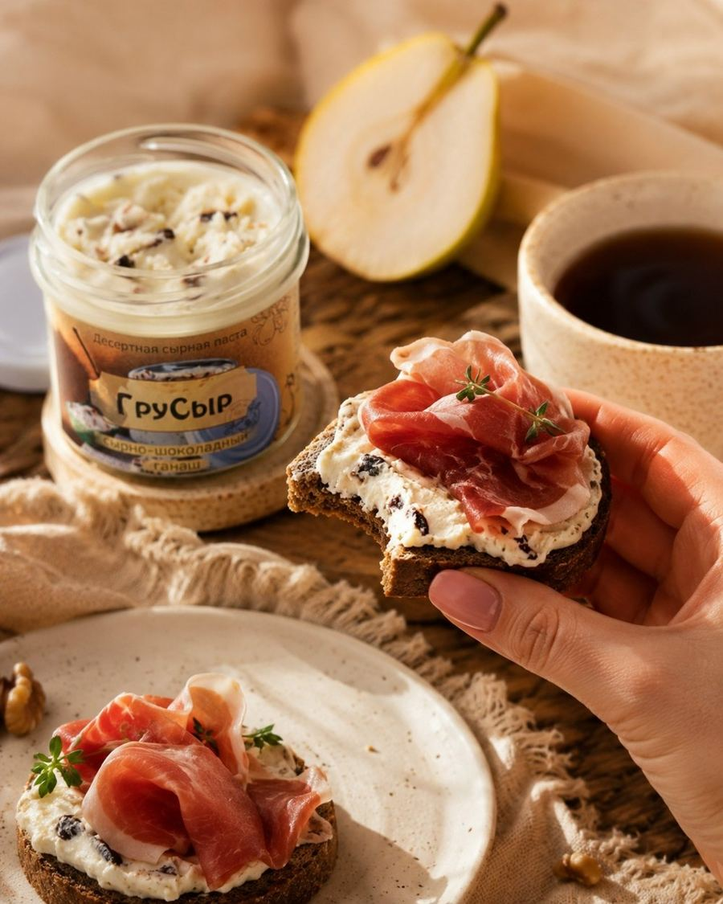
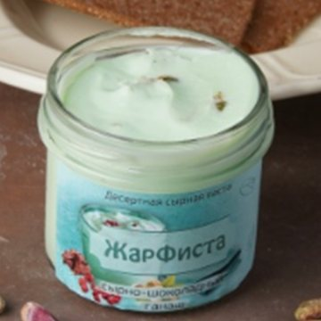
Сливочный крем, жареная солёная фисташка и шоколад
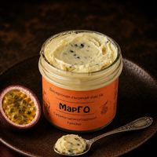
Горгонзола, шоколад и фруктовая кислинка
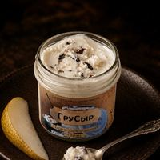
Сливочный ганаш и лёгкая копчёная нота
Не очередная коробка конфет
Для дня рождения, коллеги или подарка без повода. Анна подберёт наполнение по вкусу и бюджету.
пенал из 5 ТрюфЧизов
800 ₽
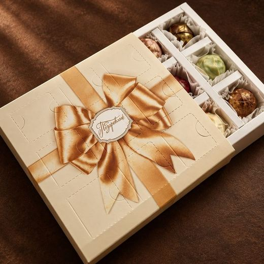
набор из 9 ТрюфЧизов
от1 400 ₽
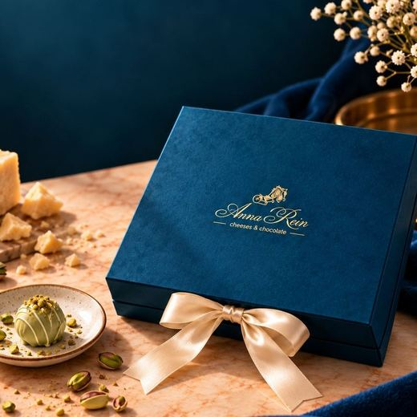
коробка из 16 ТрюфЧизов
2 700 ₽
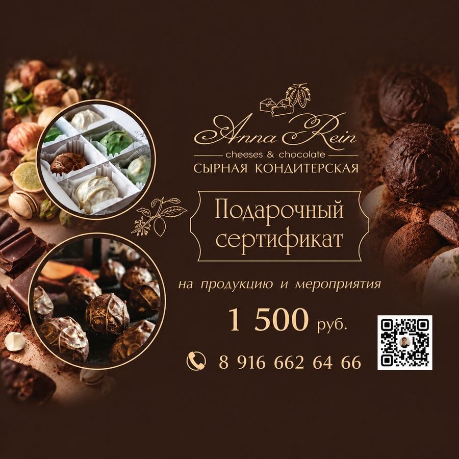
подарочный сертификат: 1 500, 3 000, 5 000 или 7 000 ₽
от1 500 ₽
Отзывы покупателей
Отзывы покупателей из ВКонтакте — каждый можно открыть и проверить.
Сырные конфеты очень необычные, но очень вкусные и красиво упакованы. Это реально новые вкусы и эмоции
Всё прекрасно: и коробочка, и вкладыш с хранением и рекомендациями
Вкус многослойный и очень выразительный
Вкус, у которого есть автор
Всё началось с домашнего сыроделия и первой горгонзолы. Анна изучала сыр, работала экскурсоводом в Музее истории шоколада и какао, а затем соединила эти два мира. Так появился первый ТрюфЧиз, а позже — сырные пасты и подарочные наборы.
Две золотые медаликонкурс «Наша Марка»
Перед первым заказом
Условия подтверждаются до оплаты заказа
С ассорти из 4 ТрюфЧизов. Расскажите, какой шоколад, сыр, ягоды и орехи вам нравятся, — Анна поможет выбрать вкусы.
В холодильнике до 2 месяцев. Перед подачей оставьте их на 10–15 минут при комнатной температуре.
Да, отправляем по России через Ozon, Яндекс и СДЭК. Срок зависит от выбранной службы и удалённости города или адреса получателя. Точные стоимость и срок Анна сообщит до подтверждения заказа.
Срок зависит от выбранной позиции и наличия. Анна назовёт его до подтверждения заказа.
Не нужно выбирать в одиночку
В сообщении укажите, какие вкусы вам нравятся, выбираете для себя или в подарок и на какую сумму рассчитываете.
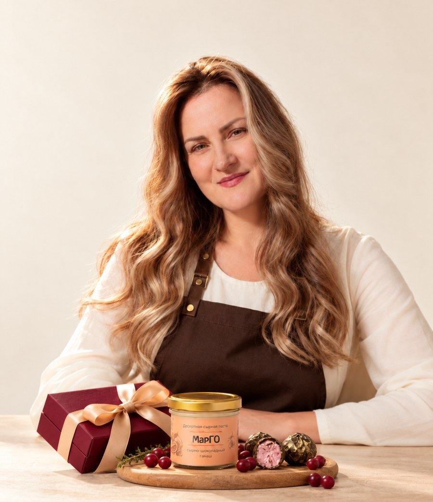
какой шоколад, сыр, ягоды и орехи вам нравятся
для себя или в подарок
на какую сумму подобрать варианты
Анна предложит подходящие ТрюфЧизы, пасту или подарочный набор, подтвердит наличие, срок изготовления и доставку.
ИП Вашкевич Анна Рейнгольдовна · ОГРНИП 323508100476852